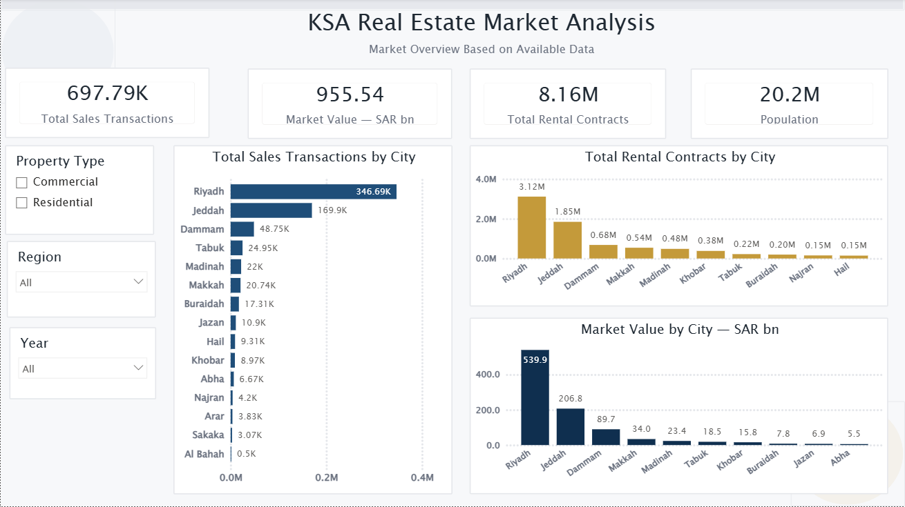
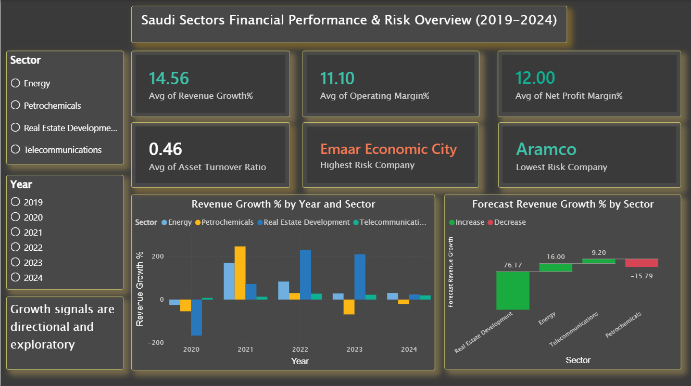
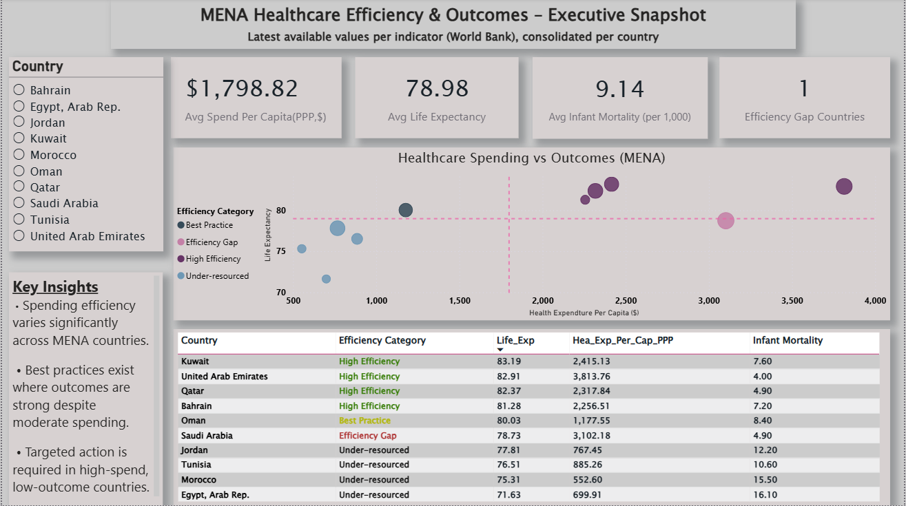
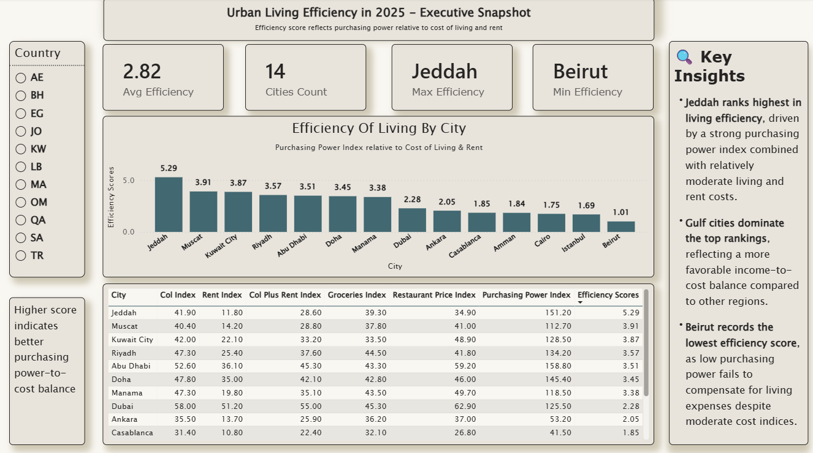
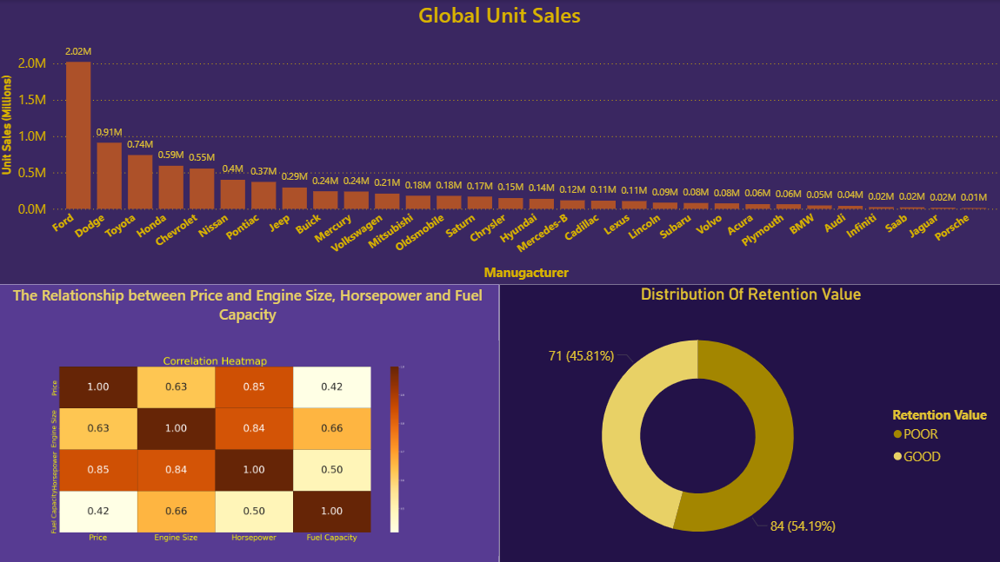
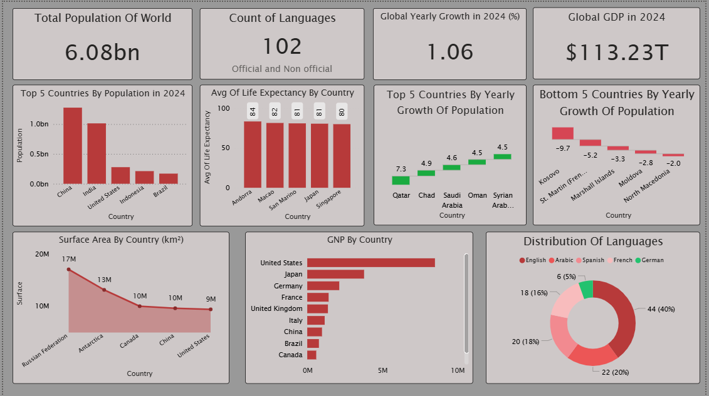
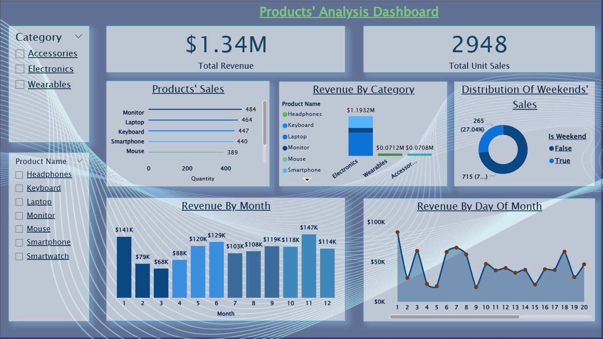

تحليل السوق
سوق العقارات السعودي
نظرة متكاملة على المبيعات والإيجارات والسكان والمؤشرات الاقتصادية في مدن المملكة.
Power BI · DAX · Python
استعرض المشروعمشاريع مستقلة تستكشف الأسواق والعمليات وسلوك العملاء. يمكنك الاطلاع على الشيفرة المصدرية ولوحات المعلومات ومنهجية العمل على GitHub.

نظرة متكاملة على المبيعات والإيجارات والسكان والمؤشرات الاقتصادية في مدن المملكة.
Power BI · DAX · Python
استعرض المشروع
تحليل الربحية والسيولة والرافعة المالية ومقارنة الأداء بمعايير القطاع استنادًا إلى القوائم المالية للفترة 2019–2024.
Power BI · Python · Excel
استعرض المشروع
تحليل تأخيرات التسليم والالتزام باتفاقيات مستوى الخدمة ومقارنة شركات النقل لتحديد مواطن التعثّر في العمليات.
Power BI · Python · Excel
استعرض المشروع
تحليل استشاري لكفاءة الرعاية الصحية في الشرق الأوسط وشمال أفريقيا باستخدام Python وPower BI.
استعرض المشروع ←
تحليل كفاءة المعيشة في مدن الشرق الأوسط وشمال أفريقيا استنادًا إلى بيانات Numbeo لعام 2025.
استعرض المشروع ←
دراسة حالة متكاملة في ذكاء الأعمال تجمع بين المعالجة الأولية للبيانات في Excel ونمذجتها وتحديد مؤشرات الأداء الرئيسية وإنشاء لوحات معلومات تفاعلية.
استعرض المشروع ←
استكشفت مجموعات بيانات عالمية عن السكان والاقتصاد والتركيبة السكانية للكشف عن الأنماط المشتركة بين الدول وإبراز أهم النتائج على المستوى العالمي.
استعرض المشروع ←
حلّلت بيانات المبيعات وسلوك العملاء في التجارة الإلكترونية لتقييم أداء الأعمال، وحدّدت أنماط الشراء بتقسيم العملاء إلى شرائح.
استعرض المشروع ←صفحة لقائمة طعام مطعم بتصميم متجاوب ونسختين عربية وإنجليزية.
استعرض المشروع ←مشروع يعثر على الأعداد الأولية بين 1 والحد الذي يحدّده المستخدم.
استعرض المشروع ←صفحة صغيرة تولّد قصائد عشوائية وفق عدد المقاطع الذي يختاره المستخدم.
استعرض المشروع ←واجهة بسيطة لمتجر إلكتروني تركّز على عرض المنتجات.
استعرض المشروع ←صفحة تعرض أسئلة عامة قابلة للطي وتدعم الوضعين الداكن والفاتح.
استعرض المشروع ←متاح لفرص العمل في تحليل البيانات وPower BI داخل السعودية أو عن بُعد.